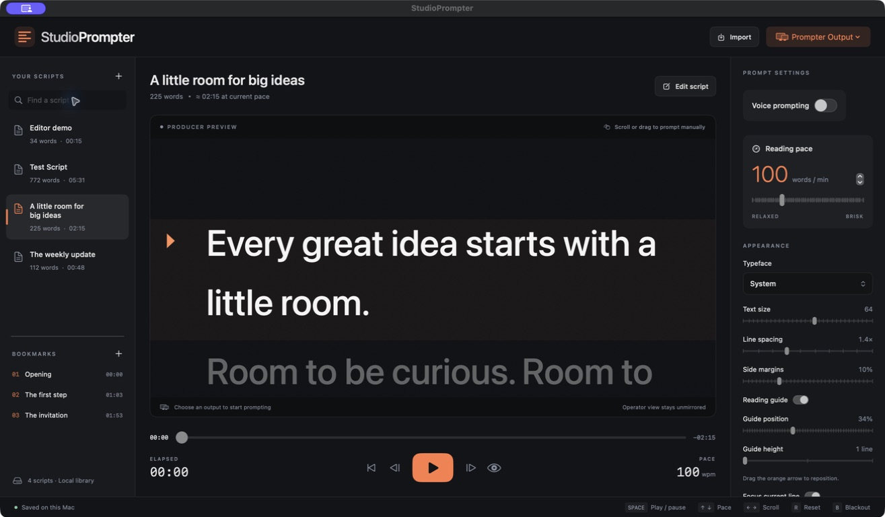

It follows you.
Local Whisper follows your script or adapts to your cadence. Pause, skip a word, take a breath. Experimental hands-free commands keep you in front of the camera.
On-device processing · No cloud AIFREE & OPEN SOURCE · MADE FOR MAC
Your words. Your rhythm. Your studio.
A native teleprompter that
follows your voice, keeps your producer in control, and puts your
script right where you need it.
Apple silicon · macOS 13.3+ · No subscription
The demo opens a full browser workspace. No install. No AI models.

WHEN YOU’RE READY TO HIT RECORD
Keep your attention on the conversation. Let StudioPrompter handle your place in the script.
Local Whisper follows your script or adapts to your cadence. Pause, skip a word, take a breath. Experimental hands-free commands keep you in front of the camera.
On-device processing · No cloud AIKeep producer controls on your Mac. Send the script to a talent monitor, or read in Webcam Layout close to your camera. Mirror the text for prompter glass.
External displays · Webcam LayoutTurn an iPad into your reading display. Pair once on the same network. Scrolling, bookmarks, and appearance stay in sync with the Mac.
Companion for iPad · Available through TestFlight Request iPad TestFlight accessOpens a protected contact page. Include your TestFlight email when you write.
StudioPrompter 0.2.0 · Apple silicon · macOS 13.3+
Free and open source · AGPL-3.0 license. Early tester release; not yet Apple notarized. Release & installation notes ↗